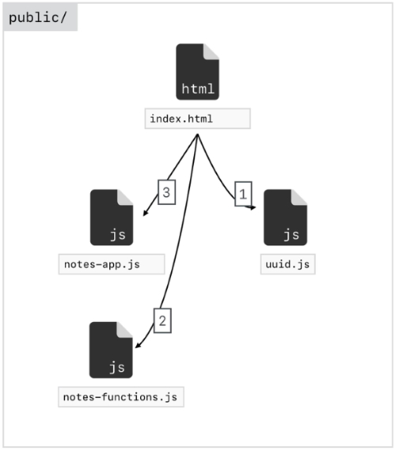
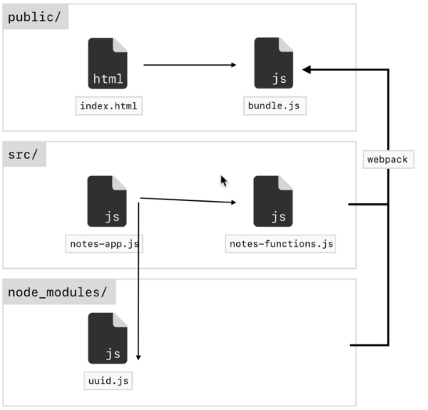

npm install -g babel-cli babel --version
Go to the folder you want to use Babel in (ours is js-bootcamp/boilerplate).
We have a file we want to transpile named input.js.
babel input.js -o output.js
output.js is our output file.
If you look at output.js you will notice that it has hardly changed.
We need to create a project file and we can do that by running:
npm init
Accept all the defaults and it will create a package.json file.
Now we need to add a Babel preset (locally only).
npm install babel-preset-env@1.6.1
This installs the preset version 1.6.1 in the node_modules folder. If you look at your package.json file again you will notice that it has added a dependency which is the preset we installed.
"dependencies": {
"babel-preset-env": "^1.6.1"
}
We also have a new file added to our root folder named package-lock.json. This keeps track of the version of modules we are using in case there are conflicts in the future.
Now we can run our transpiler command again with our new preset.
babel input.js -o output.js --presets env
or
babel input.js --out-file output.js --presets env
Now you will notice that there is a big difference in output.js.
This is a modified version of our file that is going to work in a wider range of browsers.
Once we have transpiled our .js files we can delete the node_modules folder. We don’t really need it anymore.
If you need to transpile again in the same folder just run this command to get the node_modules folder back.
npm install
You don’t need the preset part of the line anymore because when npm is installing it will look at your package.json file and automatically install dependencies. This makes it easy to pass our projects around.
We are now going to change our folder structure.
Add in a public folder which will contain our web application, that is everything that we need to send to our server. Inside of public create a js folder.
The next folder will be src which will contain all of our js code before we send it to Babel.
Inside the public folder we are going to put in all of the js code that was processed by Babel.
Rename input.js to index.js and put in in the src folder. Delete output.js.
Compile your code with:
babel src/index.js -o public/js/bundle.js --presets env
This is the long handed way of compiling. We can add this command into package.json.
{
"name": "boilerplate",
"version": "1.0.0",
"description": "",
"main": "input.js",
"scripts": {
"build": "babel src/index.js -o public/js/bundle.js --presets env"
},
"author": "",
"license": "ISC",
"dependencies": {
"babel-preset-env": "^1.6.1"
}
}
We can then run this command as many times as we want:
npm run build
To get our code to run we will build an index.html file in our public folder.
Link bundle.js into index.html and change the index.js file to:
'use strict';
const name = 'Alan';
console.log(name);
class Hangman {
myMethod() {
return 'Testing...';
}
}
const hangman = new Hangman();
console.log(hangman.myMethod());
Re-compile the js code and run the program.
Alan Testing...
Is printed in the console.
Internet Explorer doesn’t have classes built into its version of JavaScript but now that we have transpiled our code we can run it in Internet Explorer.
Once again we wouldn’t want to manually compile our JavaScript code each time we made a change to our code. Fortunately we can set this up in package.json to automatically compile for us. Change our build line to:
"build": "babel src/index.js -o public/js/bundle.js --presets env --watch"
Now we run npm run build again.
This time the script keeps running until we close it down.
To see this work change your name in index.js to James and look at the console in your browser.
It produces the following result:
James Testing...
Babel and Live Server were both installed globally on my PC. This makes it hard if I want to give my whole package away for use on another PC.
We can uninstall global modules and then install them as local dependencies for our project.
We have minor issues with multiple JavaScript files in a project. The main problem is that you have to load each JavaScript file into your HTML file in a particular order.

In the Notes app we have three JavaScript files and an Index HTML file. The JavaScript files have to be loaded in order into our HTML file…
Webpack allows us to work around this issue so we will be using it instead of Babel for organising our project. We still be using Babel to compile our code though.

The folder structure is similar to our Boilerplate example.
In this case we will be using uuid as a node_module so we won’t need to bring in the file as we did previously.
We will use Webpack to combine our three JavaScript files into one compiled file named bundle.js. Webpack can do more than compile our JavaScript files. It also compiles SASS into CSS.
The website is webpack.js.org. The most important part of this website is the documentation.
In this case we are going to install Webpack locally into our boilerplate app.
npm install webpack@4.5.0 webpack-cli@2.0.14
Webpack will make changes to our package.json configuration file.
Once we have Installed Webpack we can configure it. Like Babel we have to let Webpack know where our source code resides and where to save the generated code. We do this in a separate config file.
We are going to be running Webpack via a script similar to the way we run Babel. We add it to package.json.
{
"name": "boilerplate",
"version": "1.0.0",
"description": "",
"main": "input.js",
"scripts": {
"webpack": "webpack",
"build": "babel src/index.js -o public/js/bundle.js --presets env --watch"
},
"author": "",
"license": "ISC",
"dependencies": {
"babel-preset-env": "^1.6.1",
"webpack": "^4.5.0",
"webpack-cli": "^3.3.9"
}
}
We don’t want to add a long command to tell Webpack where the code resides and how to compile inside of package.json so we will create a new JavaScript file named webpack.config.js in the root folder to do this.
We use node.js commands in this file.
The entry path must use relative paths to get to our files.
The output path must use an absolute paths to compile the code to. The problem with this is that it breaks if we move our project or give it to somebody else.
Fortunately node.js gives us a way to do this.
const path = require('path');
module.exports = {
entry: './src/index.js',
output: {
path: path.resolve(__dirname, 'public/js');
}
}
// /d/WebDev/JavaScript/js-bootcamp/boilerplate
We need to use a node.js module to get the path information.
const path = require('path');
To get the absolute path we use a node.js variable named __dirname.
To get around the different operating systems you could be working on we use the method path.resolve() with two arguments. The first is the absolute path to our root and the next argument is the folder we want our compiled code to reside in.
path: path.resolve(__dirname, 'public/js');
We are now ready to start working.
npm run webpack
This will grab our webpack.config.js file and then run our code successfully. It creates a file named main.js which is a minified version of our compiled code.
We can ren name this file by adding a line to our configuration.
const path = require(‘path’)
module.exports = {
entry: './src/index.js',
output: {
path: path.resolve(__dirname, 'public/js'),
filename: 'bundle.js'
}
}
Now rerun the webpack command to recompile our code and you will see the minified bundle.js file.
Create a new JavaScript file in public/src named utilities.js. We will remove all content from index.js and in both files we will just add a console.log() line. Now run Webpack.
npm run webpack
This will only compile index.js and ignore utilities.js. This because the entry point in the webpack.config.js pints to index.js. If you run the index page you will only see the console.log() from index.js.
The solution to this problem is to not change the Webpack config at all. We can now use the JavaScript modules system. We have two new statements.
console.log('utilities.js');
import './utilities';
console.log('utilities.js');
Note: in the import line we can leave off the .js extension of the filename. We are also using relative paths.
Run Webpack again. This time in the output it will mention the two JavaScript files being compiled. If you run the index page again you will get the following result in the console:
utilities.js index.js
We now want to create a simple function in utilities.js.
console.log('utilities.js');
const add = (a, b) => a + b;
We would assume that this function could be called from index.js.
import './utilities';
console.log('index.js');
console.log(add(35, 7));
but we would be wrong because each JavaScript file has its own scope. This is actually a good thing. The way we get around this problem is to create an export statement in utilities.js.
console.log('utilities.js');
export const add = (a, b) => a + b;
We can still use the add() function in utilities.js if we want but now we can use the add() function in index.js as well.
We have to make a change to the import statement in index.js to be able to use the function.
// import './utilities';
import { add } from './utilities';
console.log('index.js');
console.log(add(35, 7));
Comment out the original import statement and replace it with the one above that mentions the add() function. This time the code will work after compiling with Webpack.
Now we get the following result:
utilities.js index.js 42
You can export any number of objects from any file. Add another export line in utilities.js.
console.log('utilities.js');
export const add = (a, b) => a + b;
export const name = 'Alan';
In index.js you separate each export with a comma.
import { add, name } from './utilities';
console.log('index.js');
console.log(add(35, 7));
console.log(name);
Output:
utilities.js index.js 42 Alan
As you can see we now have access to add() and name.
This gives us an easy way to communicate between files.
export const scream = (input) => {
input = input.toUpperCase() + '!';
return input;
}
Note: you can shorten the function if you want.
export const scream = (input) => `${input.toUpperCase()}!`;
import { add, name } from './utilities';
import { scream } from './scream';
console.log('index.js');
console.log(add(35, 7));
console.log(name);
console.log(scream('This is a line of text'));
utilities.js index.js 42 Alan THIS IS A LINE OF TEXT!
There are other ways we can use import and export to structure our files.
We are currently using named exports in our files. The other method is named default exports.
Named exports are where we use a name for waht we want to export and there are no limitations on the number of exports we can create. You would use named exports when you have a number of objects that you want to export.
Default exports means that we can only have one in each JavaScript file. Typically we would only use default exports when our JavaScript file contains only a single class that we need to export.
We can use named and default exports together in our import line. Add a default export in utilities.js.
export const add = (a, b) => a + b; export const name = 'Alan'; const square = (x) => x * x; export default square;
We create our new function square() and we set up the default export underneath our function.
We can now call this in index.js.
import otherSquare, { add, name } from './utilities';
import { scream } from './scream';
console.log(add(35, 7));
console.log(name);
console.log(scream('This is a line of text'));
console.log(otherSquare(10));
Note: because there is only one default export in each JavaScript file we don’t have to keep the same function name in both files. We can rename the function in the imports line as we have done above.
42 Alan THIS IS A LINE OF TEXT! 100
There is a different way we can set up our exports. Currently we are defining all our exports as we use them. We can create our exports in one place. Typically that is the last line in our file.
Remove export from each line in utilities.js. We still want square() as the default export and the other objects as named exports.
const add = (a, b) => a + b;
const name = 'Alan';
const square = (x) => x * x;
export { add, name, square as default }
Note: the exports can be placed in any order.
Now we have changed our file we have the exact same functionality as previous so we don’t have to change anything in our index.js file. Compile and the index page should produce the same results.
const scream = (input) => `${input.toUpperCase()}!`;
export { scream as default};
import otherSquare, { add, name } from './utilities';
import otherScream from './scream';
console.log(add(35, 7));
console.log(name);
console.log(otherScream('This is a line of text'));
console.log(otherSquare(10));
42 Alan THIS IS A LINE OF TEXT! 100
Install the Babel loader.
npm install babel-loader@7.1.4
We need to make changes to package.json and webpack.config.js.
{
"name": "boilerplate",
"version": "1.0.0",
"description": "",
"main": "index.js",
"dependencies": {
"babel-cli": "^6.26.0",
"babel-loader": "^7.1.4",
"babel-preset-env": "^1.6.1",
"webpack": "^4.5.0",
"webpack-cli": "^2.0.14"
},
"devDependencies": {},
"scripts": {
"build": "webpack"
},
"author": "",
"license": "ISC"
}
We change the build line by removing the Babel statement and adding Webpack.
"scripts": {
"build": "webpack"
},
const path = require('path');
module.exports = {
entry: './src/index.js',
output: {
path: path.resolve(__dirname, 'public/js'),
filename: 'bundle.js'
},
module: {
rules: [{
test: /\.js$/,
exclude: /node_modules/,
use: {
loader: 'babel-loader',
options: {
presets: ['env']
}
}
}]
}
}
We have to exclude the node_modules folder.
exclude: /node_modules/,
We need to include all JavaScript files from the js folder.
test: /\.js$/,
Also add the babel-loader so we can compile the code.
use: {
loader: 'babel-loader',
options: {
presets: ['env']
}
}
Now we should be able to compile our code.
npm run build
Make sure you use this command line instead of the npm run webpack command we were using previously.
There are two solutions to automating Webpack. The simple one is discussed first.
"scripts": {
"build": "webpack --watch"
},
This works but the second option has some extra benefits. It is the Webpack Dev Server. We can install this with:
npm install webpack-dev-server@3.1.3
We have to make changes to our configuration.
After the module object add:
devServer: {
contentBase: path.resolve(__dirname, 'public'),
publicPath: '/js/'
}
Change the scripts object to:
"scripts": {
"dev-server": "webpack-dev-server"
},
Use this command to run the Webpack dev server.
npm run dev-server
The server runs on 127.0.0.1:8080
We are actually not using the bundle.js file so can delete it. This is why there is a reference to publicPath in the config file. This makes it faster to compile and run any changed code.
We are going to fix the warning that we get in the browser console window by setting up our production and development environments.
Working in development is faster that production as it doesn’t create an output .js file.
Change the script object again.
"scripts": {
"dev-server": "webpack-dev-server --mode development",
"build": "webpack --mode production"
},
Restart the dev server.
We are now just about finished setting up our environment we will be working in development mode until we are finished with our project. Once this is done we can then compile our code for production with the following command.
npm run build
This will create our bundle.js file that can be uploaded to our live server.
We have one more change to make to our config file to show more accurate debugging information. If we look at the console output and look at the JavaScript that is running it is actually the Babel compiled JavaScript so the line numbers don’t relate to our original source code in the editor. We can fix this by:
Add a line after our devServer object.
devtool: 'source-map'
Once again if you do any changes to your configuration you have to restart the dev server.
npm run dev-server
Now you will see the correct line numbers appear in the console window. clicking on the line number will bring the source code up and this time you will see your originale source code not the Babel compiled source code. This configuration change maps the Babel compiled code to the source code.
The application we have created is named boilerplate for a reason. We will use it as a template to build our future web applications saving us having to set up our devlopment and production environments again.
Make a copy of the boileplate folder and save as a new hangman folder after saving the old hangman as hangman.old.
Copy the files across to the new folder structure. Take the code out of the old app.js and place it into index.js.
We have to make changes to the following files.
At the bottom of the file add:
export { Hangman as default }
At the bottom of the file add:
export { getPuzzle as default }
At the top of the file add:
import Hangman from './hangman'; import getPuzzle from './requests';
In the console run the following:
npm install
This will recreate the node_modules directory.
Note: when I did this I got a number of warnings and one was for Webpack and was regarded as high severity. I initally ignored this and my web application failed. To get around this I ran the command.
npm audit fix
This fixed my issue. The interesting thing waas that I ran the production build (npm run build) and the web application actually worked fine so my initial problem was with Webpack not compiling my source code.
I have now realised that I am installing an older version of webpack-dev-server. I could have installed a newer version with the following command.
npm update webpack-dev-server --depth 1
This updates the server to webpack-dev-server@3.8.2. This is the version that is now in my package.json file. I reinstalled node_modules and this problem has resolved itself.
There is still an issue with the JavaScript. This is due to our async method in requests.js. To fix this we have to install another Babel product.
npm install babel-polyfill@6.26.0
We have to load this before our entry point in the config file.
Change the entry value to an array.
entry: ['babel-polyfill', './src/index.js'],
Restart the dev-server and your JavaScript should be compiling correctly. Once we are happy that the application is working correctly we can do the production build.
webpack --mode production
This will create bundle.js in the public/js directory. We are now ready to redeploy to Netlify.
Log in to Netlify and select your current Hangman app. Now click on the Deploys button and you will see an area where you can drag the lastest version of your application to. Just pick up the public directory and drag it to Netlify. To run your app:
https://todoapp-alanr.netlify.com/
One last thing: copy the babel-polyfill line from package.json and add that to your Boilerplate application.
npm install uuid@3.2.1
Import into your JavaScript code.
import uuidv4 from 'uuid/v4';
To create a GUID.
console.log(uuidv4());
To install another third-party library
https://www.npmjs.com/package/validator
Validator is a library of string validators and sanitizers.
To install.
npm install validator@11.1.0
In your JavaScript code.
import validator from 'validator';
console.log(validator.isEmail('alan@alan.com')); // true
console.log(validator.isEmail('alan')); // false
Or, import only a subset of the library:
import isEmail from 'validator/lib/isEmail';
Other useful functions:
console.log(validator.isCreditCard('123456789')); // false
console.log(validator.isCreditCard('4595059348661611')); // true
console.log(validator.isISBN('9781118102282', 13)); // true -- type is optional
If you want to undelete the packages you just installed.
npm uninstall uuid validator
We have to create two JavaScript files in our src directory. This requires changing your config file.
The files we need are index.js and a new one edit.js.
We need to change the entry and filename objects.
entry: {
index: ['babel-polyfill', './src/index.js'],
edit: ['babel-polyfill', './src/edit.js']
},
output: {
path: path.resolve(__dirname, 'public/js'),
filename: '[name]-bundle.js'
},
In filename we prefix the filename with [name]-. This will create two bundle files, index-bundle.js and edit-bundle.js.\
In our index.html page remove all of the script references at the bottom of the body tag and replace them with this:
<script src="js/index-bundle.js"></script>
Also change edit.html to:
<script src="js/edit-bundle.js"></script>
Install the node_modules files.
npm install
We will see index.js in the console if the page is working properly.
http://127.0.0.1:8080/edit.html
Should show you edit.js in the console. This means the application is working and now we are ready to convert the app to JavaScript modules.
We are going to have and issue when doing this conversion because the notes object is global and is going to be used in multiple JavaScript files. As we know each JavaScript file has its own function scope so notes won’t work. We will need to use imports and exports to move data around.
We will need to restructure our application.
Install a new package.
npm install moment@2.22.1
rest parameterThe rest parameter collects all remaining elements into an array.
const calculateAverage = (name, ...numbers) => {
let sum = 0;
numbers.forEach((num) => sum += num);
const average = sum / numbers.length;
return `The average of ${name} is ${average}`;
}
// The average of grades is 63
console.log(calculateAverage('grades', 0, 100, 88, 64));
In this case rest picks up 0, 100, 88, 64 and puts them in an array named numbers. numbers.forEach sums the numbers in numbers and average gets the average of the numbers.
Another example:
const printTeam = (team, coach, …players) => {
return Team: ${team}\nCoach: ${coach}\nPlayers: ${players.join(', ')};
}
console.log(printTeam(‘Liberty’, ‘Casey Penn’, ‘Marge’, ‘Aiden’, ‘Herbert’, ‘Sherry’));
Results:
Team: Liberty
Coach: Casey Penn
Players: Marge, Aiden, Herbert, Sherry
spread syntaxThe spread syntax gives you a way to expand an array into its individual values.
You can also use the `spread`` syntax when you are calling a function. This allows you to break the array down into individual values.
const team = {
name: 'Liberty',
coach: 'Casey Penn',
players: ['Marge', 'Aiden', 'Herbert', 'Sherry']
}
console.log(printTeam(team.name, team.coach, ...team.players));
.
// we want to get cities from both arrays let cities = ['Paris', 'Istanbul', 'Athens', 'Puglia']; let newCities = [...cities]; console.log(cities); console.log(newCities);
cities and newCities are two separate arrays.
Results:
Array(4) [ “Paris”, “Istanbul”, “Athens”, “Puglia” ]
Array(4) [ “Paris”, “Istanbul”, “Athens”, “Puglia” ]
We can add a new value on newCities
newCities.push('Montenegro');
console.log(cities);
console.log(newCities);
Results:
// newCity changes and cities stays the same showing that the arrays are different.
Array(4) [ “Paris”, “Istanbul”, “Athens”, “Puglia” ]Array(5) [ “Paris”, “Istanbul”, “Athens”, “Puglia”, “Montenegro” ]
Another way of adding a new value.
newCities = ['Sydney', ...cities]; console.log(cities); console.log(newCities);
Results:
Array(4) [ “Paris”, “Istanbul”, “Athens”, “Puglia” ]
Array(5) [ “Sydney”, “Paris”, “Istanbul”, “Athens”, “Puglia” ]
We can also add on to the cities array.
cities = [...cities, 'Sydney'] // Array(5) [ "Paris", "Istanbul", "Athens", "Puglia", "Sydney" ] console.log(cities);
spread syntaxWe can also use spread with objects but to use it with webpack we have to install another babel preset.
npm install babel-plugin-transform-object-rest-spread@6.26.0
We also have to make a change to the config file:
options: {
presets: ['env'],
plugin: ['transform-object-rest-spread']
}
let house = {
bedrooms: 4,
bathrooms: 2.5,
yearBuilt: 2017
}
let newHouse = {
...house
}
console.log(house);
console.log(newHouse);
Results:
Object { bedrooms: 4, bathrooms: 2.5, yearBuilt: 2017 }
Object { bedrooms: 4, bathrooms: 2.5, yearBuilt: 2017 }
newHouse.yearBuilt = 2018; console.log(house); console.log(newHouse);
Results:
// only newHouse changes. They are both different objects.
Object { bedrooms: 4, bathrooms: 2.5, yearBuilt: 2017 }Object { bedrooms: 4, bathrooms: 2.5, yearBuilt: 2018 }
// We can also add on new properties
newHouse = {
basement: true,
...house
}
// Object { basement: true, bedrooms: 4, bathrooms: 2.5, yearBuilt: 2017 }
console.log(newHouse);
Order is also important - this will work because house has been added then the bedrooms are changed to 3 afterwards.
newHouse = {
basement: true,
...house,
bedrooms: 3
}
// Object { basement: true, bedrooms: 3, bathrooms: 2.5, yearBuilt: 2017 }
console.log(newHouse);
/**
* Create a person object with name and age.
* Create a location object with city and country.
* Create a new overview object and use the spread operator to add all four properties.
*/
const person = {
name: 'Alan Robson',
age: 67
}
const location = {
city: 'Ballarat',
country: 'Australia'
}
const overview = {
...person,
...location
}
// Object { name: "Alan Robson", age: 67, city: "Ballarat", country: "Australia" }
console.log(overview);
Destructuring lets you pull values out of an object or array and store them in their own variable. More useful with objects than arrays.
In JavaScripot you often have an entire object passed to a function where you only need one or two values from that object. Destructuring will allow you to pull properties from that object or pull items off of an array.
Create an object:
const todo = {
id: 'asdfpoijwermasdf',
text: 'Pay the bills',
completed: false
}
We can pull out a value from the object.
const text = todo.text; const completed = todo.completed;
This saves us from constantly having to use the object to get a value from but there is a problem it is time consuming to pull out each value from the object especially if the object is more complex than the one above.
We can make this a lot easier with destructuring and this allows us to take as many properties as we like and store them in variables.
const { } = todo;
In this case we are referencing the object todo. We now name the properties that we require access to.
const { text, completed } = todo;
console.log(text); // Pay the bills
console.log(completed); // false
Destructuring is very similar to the imports lines in our previous programs. It lets JavaScript know what we want access to.
We can customise things a bit further. First thing we can do is change the name of the local variable created.
const { text:todoText, completed } = todo;
console.log(todoText); // Pay the bills
console.log(completed); // false
We can also pull off properties that don’t exist in the object.
const { text:todoText, completed, details } = todo;
console.log(todoText); // Pay the bills
console.log(completed); // false
console.log(details); // undefined
We can also add a default value if one doesn’t exist. We could use either an object, array, string or number.
const { text:todoText, completed, details = 'No details provided.' } = todo;
console.log(todoText); // Pay the bills
console.log(completed); // false
console.log(details); // No details provided.
We can combine creating a new variable name and default value.
const { text:todoText, completed, details:OtherDetails = 'No details provided.' } = todo;
console.log(todoText); // Pay the bills
console.log(completed); // false
console.log(otherDetails); // No details provided.
We can also use a rest parameter to grab the rest of the properties in the object. In our case this is the id property. Add three dots and pick a name for the new object.
const { text:todoText, completed, details:OtherDetails = 'No details provided.', ...others } = todo;
console.log(todoText); // Pay the bills
console.log(completed); // false
console.log(otherDetails); // No details provided.
console.log(others); // {id: "asdfpoijwermasdf"}
In the following example ordering is important.
const age = [65, 0, 21, 13]; const [firstAge, secondAge] = age; console.log(firstAge); // 65 console.log(secondAge); // 0
firstAge gets the first value [0] and secondAge gets the second value [1].
You can also skip values.
const age = [65, 0, 21, 13]; const [firstAge, secondAge, ,fourthAge] = age; console.log(firstAge); // 65 console.log(secondAge); // 0 console.log(fourthAge); // 13
As with objects we can add default values.
const age = [65, 0, 21, 13]; const [firstAge, secondAge, , fourthAge, fifthAge = 'Age not provided.'] = age; console.log(firstAge); // 65 console.log(secondAge); // 0 console.log(fourthAge); // 13 console.log(fifthAge); // Age not provided.
We can also use rest parameters.
const age = [65, 0, 21, 13]; const [firstAge, ...otherAges] = age; console.log(firstAge); // 65 console.log(otherAges); // (3) [0, 21, 13]
You can also use destructuring with functions.
const todo = {
id: 'asdfpoijwermasdf',
text: 'Pay the bills',
completed: false
}
const printTodo = (todo) => {
console.log(`${todo.text}: ${todo.completed}`);
}
printTodo(todo); // Pay the bills: false
Change this to destructuring.
const printTodo = () => {
const {} = todo;
}
We don’t need to do this as we can use destructuring in the function parameter.
const todo = {
id: 'asdfpoijwermasdf',
text: 'Pay the bills',
completed: false
}
const printTodo = ({ text, completed }) => {
console.log(`${text}: ${completed}`);
}
printTodo(todo); // Pay the bills: false
Destructuring is a very powerful tool.